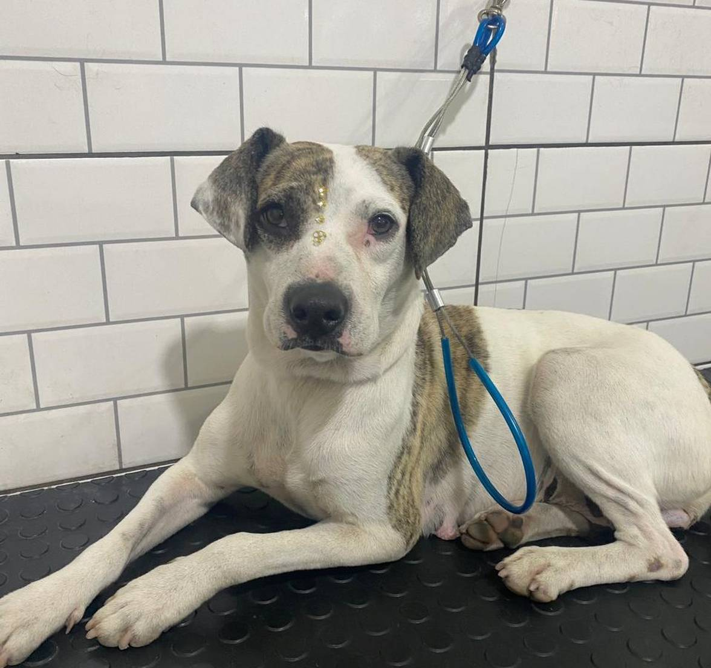
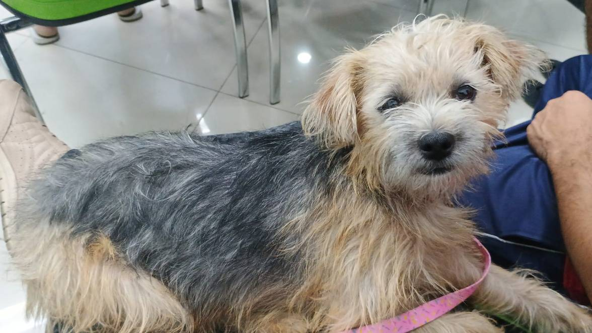
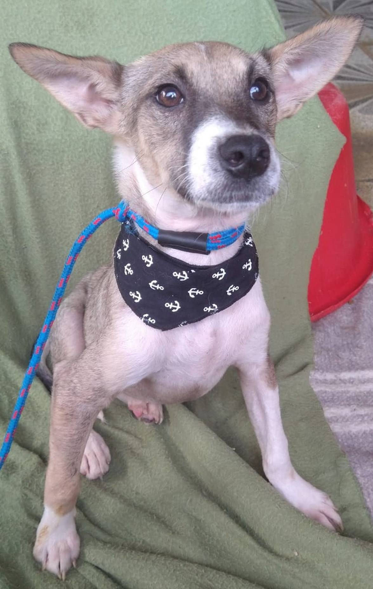
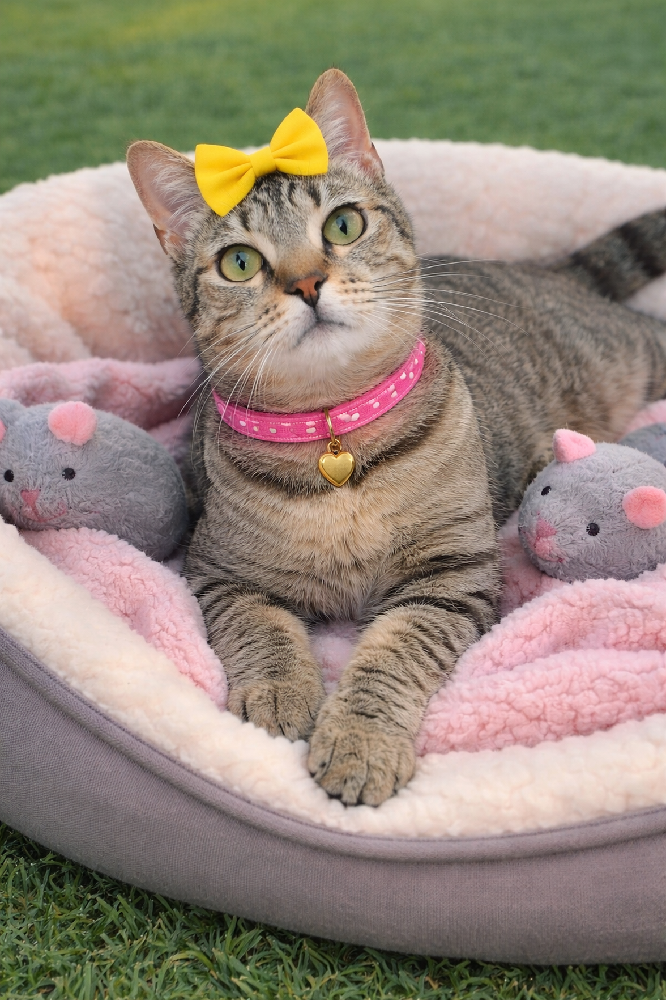
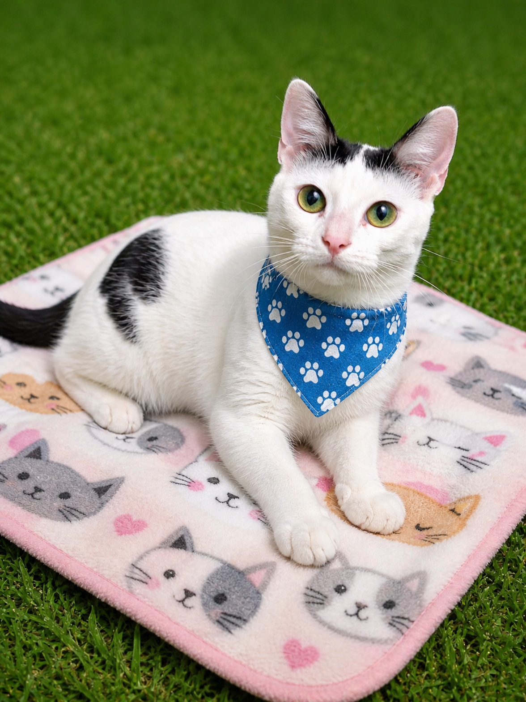
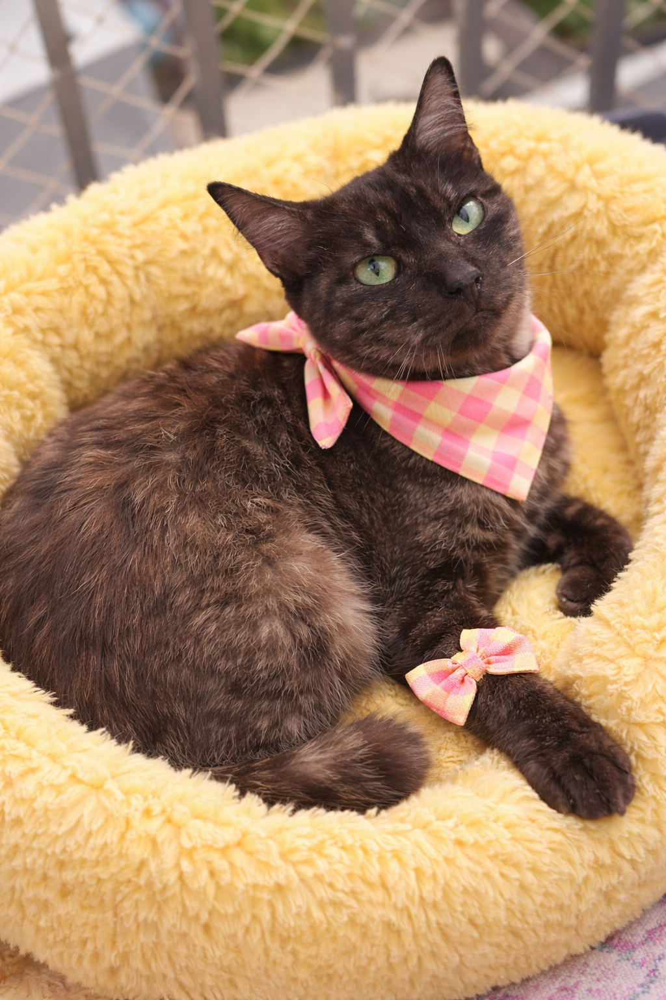
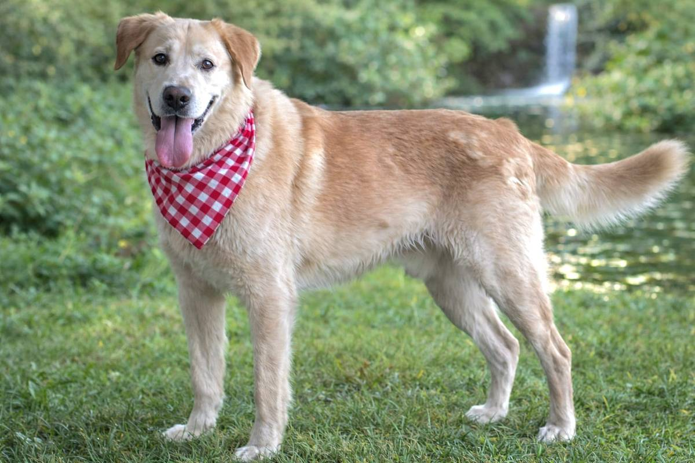

Conheça nossos bichinhos disponiveis para adoção
Publicado em

Conheça a Brigite
- Nome: Brigite
- Idade:2 anos
- Castrada
Personalidade: Sociável com desconhecidos, crianças e outros cahorros
Docil, carente e brincalhão

Conheça a Luna
- Nome: Luna
- Idade:2 anos
- Castrada
Personalidade: Sociável com desconhecidos, crianças
Calma, carente e brincalhão

Conheça o paulinho
- Nome: Paulinho
- Idade:3 meses
- Não Castrado
Personalidade: Sociável com desconhecidos, crianças
Dócil, carente e brincalhão

Conheça a Madame
- Nome: Madame
- Idade:2 anos
- Castrada
Personalidade: Sociável com desconhecidos, crianças, outros animais
Calma, dócil, carente e brincalhão

Conheça a Marikota
- Nome: Maricota
- Idade:2 anos
- Castrada
Personalidade: Sociável com desconhecidos, crianças
Calma, sociável, carente e brincalhão

Conheça o Ivan
- Nome: Ivan
- Idade:8 meses
- Castrado
Personalidade: Sociável com desconhecidos, crianças, outros animais
Calmo, independente, sociável e brincalhão

Conheça a Lilian
- Nome: Lilian
- Idade:3 anos
- Castrada
- FIV e FEV negativo
Personalidade: Sociável com desconhecidos, crianças e outros animais
Calma, sociável ama ronronar e brincalhão

Conheça o NINO
- Nome: NINO
- Idade:8 meses
- Castrado
- FIV e FEV negativo
Personalidade: Sociável com desconhecidos, crianças e outros animais
Calmo, sociável ama ronronar e brincalhão

Conheça a Maria Esmeralda
- Nome: Maria Esmeralda
- Idade:2 anos
- Castrada
- FIV e FEV negativo
Personalidade: Sociável com desconhecidos, crianças e outros gatos
Calma, sociável ama ronronar e brincalhão

Conheça o Marlon
- Nome: Marlon
- Idade:4 anos
- Castrado
Personalidade: Sociável com desconhecidos, crianças e outros animais
Calma, sociável e brincalhão